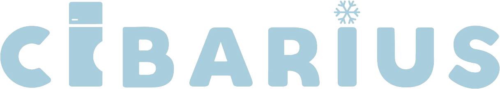

Scadenze, controlli HACCP e temperature del giorno in una schermata sola.
Ogni controllo si spunta quando viene fatto. Quelli saltati restano in evidenza.
Produzione, scadenza e lotto sull'etichetta. Il QR apre la tracciabilità della preparazione.
Giacenze, lotti e consumo medio: vedi cosa finisce e cosa scade prima.
Cibarius ti ricorda cosa scade prima che finisca in fondo al frigo. Per la casa è gratis.
Ricette che usano per primi gli ingredienti in scadenza.

Per la cucina del ristorante e per quella di casa.